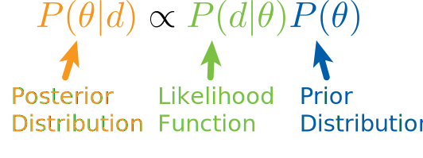

A Tutorial on Stochastic Methods for Inverse Problems
Markov Chain Monte Carlo and Hamiltonian Monte Carlo
Georgia K. Stuart
4 October 2019
Scientific Computing Seminar, UT Dallas
Outline
Motivation: Earth Imaging
- In exploration seismology, one aim is to find parameters profiles of the subsurface.
- Finding the velocity profile can tell us about the materials in the subsurface.
- Transmitted and reflected waves can tell us about velocities and interfaces between materials.
Seismic Data: Shot Gather
- Shot gathers are receiver traces for one seismic source.
- Traces are arranged by offset.
- The y-axis is time.
- Reflections show up in the traces.

The Goal: Inversion with Uncertainty Information

- Deterministic inversion algorithms give no or limited uncertainty information.
- Stochastic algorithms provide uncertainty information without imposing a certain shape on the distribution of the parameters.
Lets Start from the Beginning: Sampling from a Distribution
- Computers sample (pesudo) random numbers from a uniform distribution from 0 to 1.
- We want to sample from arbitrary probability distributions.
- One approach: solve \(F(X) = U\)
Generating Continuous Variables (Baron 2014)
- Generated a standard uniform random variable, \(U\).
- Calculate \(X = F^{-1} (U)\) where \(F\) is the probability distribution of interest.
An Example: Exponential Distribution
\(U\)
\(X\)
A Solution for Trickier Distributions: Markov Chain Monte Carlo (MCMC)
- MCMC methods provide a way to sample from a complicated probability distribution.
- Distributions may be high dimensional.
- Based off of constructing a Markov chain with the probability distribution as the equilibrium distribution.
The Metropolis-Hastings Algorithm
A Simple Example
Bayes' Rule
How do we connect this with the velocity inversion problem? Bayes' Rule!

The Likelihood Function
The Prior Distribution
Metropolis-Hastings Velocity Inversion Flowchart
Random Walk Sampler
The Forward Problem
- The forward problem produces your simulated data.
- For the examples in this talk, the forward problem is the acoustic wave equation.
- $$\frac{1}{c^2(x, z)} \frac{\partial^2 p}{\partial t^2} - \nabla p = f$$ where \(p\) is pressure, \(t\) is time, \(c\) is velocity, and \(f\) is a seismic source.